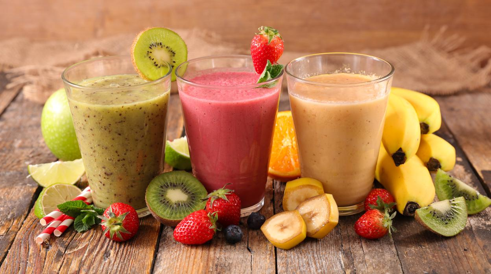
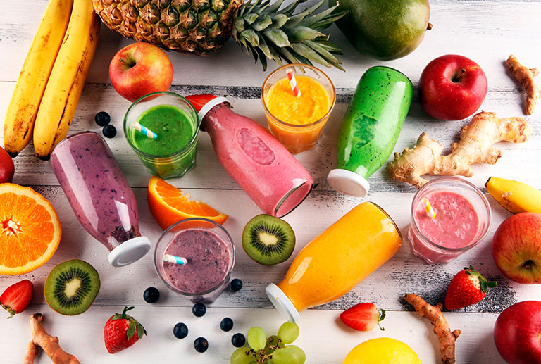

Batidos verdes con manzana y limón.

Crema de maiz con anarcado.

Berenjenas al gril con ajo y cilantro

Recetas con omega 3
Definición de alimentación: La alimentación es el proceso por medio del cual obtenemos, preparamos e ingerimos alimentos, obteniendo los nutrientes que nuestro cuerpo necesita y que son indispensables para la plenitud de nuestra vida humana.
Definición de nutrición: Por su parte, la
nutrición es definida como un conjunto de procesos involucrados
en la obtención, la asimilación y el metabolismo de los
nutrientes por el organismo.
La diferencia entre alimentación y nutrición es que la primera
es un proceso voluntario por medio del cual los seres humanos
eligen qué alimentos consumir, y la segunda es un proceso
involuntario por el que los alimentos seleccionados son
transformados después de ingerirlos.
Una alimentación correcta es aquella a la que se le aporta todos los nutrientes que nuestro cuerpo necesita para mantenerse sano y sentirse bien. Entre los principales nutrientes esenciales se encuentran: las proteínas, los hidratos de carbono, las grasas, las vitaminas y los minerales.
Basado en lo anterior, una alimentación correcta deberá ser:
En definitiva, y resumiendo, la nutrición consiste en obtener de
los alimentos que ingerimos las sustancias útiles que nuestro
organismo necesita. Pero, la correcta nutrición no solo depende
del buen funcionamiento del sistema digestivo sino también del
sistema nervioso. O quizás mejor, deberíamos decir del sistema
neuroendocrino. No podemos olvidar que el sistema nervioso
autónomo o vegetativo regula todas las funciones que son
vitales.
Y esto se realiza directamente mediante la inervación de nervios
simpáticos y parasimpáticos o bien mediante la combinación del
sistema nervioso autónomo con el sistema endocrino. Ejemplo de
esto último es la función reguladora del hipotálamo a través de
los ejes: hipotálamo-hipófiso-ovárico;
hipotálamo-hipófiso-tiroideo, hipotálamo-hipófiso-suprarrenal,
hipotálamo-hipófisis-hormona del crecimiento. Ejes que regulan
los procesos de nutrición desde el control de la voluntad de
comer, hasta el control del metabolismo energético.
El aroma y color de los alimentos estimulan la secreción de
saliva, de jugos gástricos y el peristaltismo, a través del
sistema parasimpático. Las emociones como miedo, preocupación o
enfado estimulan al hipotálamo que activa al sistema nervioso
simpático, que a su vez deprime las secreciones e inhibe la
peristalsis.
Y el círculo se cierra de la siguiente forma: el sistema
nervioso regula el funcionamiento del sistema digestivo, y a su
vez el sistema digestivo aporta los nutrientes necesarios para
el buen funcionamiento del sistema nervioso, el cual es la base
material de nuestra alma y estado anímico.

Los alimentos que comemos conforman nuestra dieta. Estas son las características que deben cumplirse para una dieta saludable:
Tener una buena salud significa gozar de un buen estado de
bienestar y una gran calidad de vida.
Esto va a hacer que tengamos un sistema inmunitario fuerte que
nos ayude a combatir la intrusión de virus y bacterias en
nuestro cuerpo.
Algunos de los alimentos más recomendados para cuidar nuestro
organismo y poder tener salud durante muchos años de nuestra
vida son los siguientes:
La manzana va a aportar mucha agua a nuestro organismo, así como una gran cantidad de fibra. Esto va a hacer que podamos tener un buen funcionamiento del sistema digestivo, y limpio el intestino.
La avena es otro alimento que se ha ido haciendo viral con el paso de los años. Y es que esta es una gran fuente de fibra, proteínas, vitaminas y minerales esenciales para cuidar nuestro cuerpo desde el interior.
El huevo contiene muchísimas proteínas muy importantes para que gocemos de una gran cantidad de energía sin necesidad de ingerir grandes calorías.
El salmón es un alimento rico en ácidos grasos Omega 3, imprescindibles para controlar los niveles de colesterol malo en nuestras arterias.
La nutrición del cuerpo depende de unos principios básicos y no solo se trata de comer alimentos saludables o de seguir dietas prediseñadas.
Todos estos consejos van a hacer que tengas una buena salud y puedas prevenir muchas enfermedades relacionadas con una mala alimentación o una ingesta irregular de todo lo que necesitamos para sobrevivir.
Así como los alimentos son importantes, mantenerse hidratado también, acá tienes algunos beneficios de tomar agua.
El cuerpo humano está conformado por un 70% de agua, desde luego, es importante ingerir dos litros de este líquido al día, según las recomendaciones internacionales. Esto te permitirá no solamente mantener una piel más hidratada, pues beber agua tiene muchos otros beneficios: regular la temperatura corporal, mantener lubricadas las articulaciones y órganos, así como tener una buena digestión, como señala la Organización Mundial de la Salud.
Por dicha razón, éste —tal como se le suele llamar— es un
líquido vital; considerado como un derecho humano.
También se deben tener algunas precauciones para no ingerir más
de lo recomendado. En exceso, el agua puede ser mala para la
salud, pues hace trabajar al riñón más de lo debido y al orinar
se pierden sales minerales.